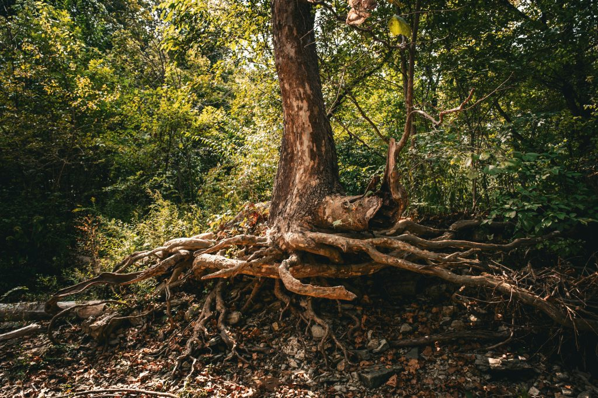

We see timber. We see shade. We see an obstacle to clear. But a tree is none of those things — or rather, it is all of them, and about five other things we never think about until they are gone.

You have probably driven past a clearing where a forest used to be and thought nothing of it. Just land. But that patch of ground did not just lose its trees. It lost its water pump, its cooling system, its soil anchor, its flood defense, and the thing quietly keeping the rain from washing everything away. All at once. All for free. All gone.
We have a habit of pricing trees only at the moment we cut them down. The timber value. The land it frees up. What we almost never price is what the tree was doing while it was standing. A mature tree is an entire service industry, running silently, around the clock, without a salary. Let us count the jobs.
Job 1: The Water Pump
A large mature tree can draw up to 1,000 litres of water from the soil and release it into the atmosphere every single day. That moisture becomes clouds, and clouds become rain. Forests do not just benefit from rainfall. They help manufacture it. This is why deforested regions across Nigeria do not just lose trees. They lose rainfall patterns, and the farmers who cleared the land find, within a generation, that the sky above their fields has become unpredictable in ways it never was before.
Job 2: The Soil Anchor
A tree’s root system can extend outward two to three times the width of its canopy, threading through the soil in a dense web that locks topsoil in place. Remove the tree and that web disappears. The next heavy rain does not soak in. It runs, and it takes the topsoil with it. Nigeria loses an estimated 3.5 billion tonnes of topsoil to erosion every year. A significant portion of that loss traces directly back to the removal of the trees that were holding it in place.
Job 3: The Air Conditioner
Walk from an open road into a forest and you will feel the temperature drop within a few steps. A healthy forest canopy can reduce ground-level temperatures by 2 to 8 degrees Celsius compared to open land. The tree releases moisture that cools the air, while its canopy intercepts solar radiation before it hits the ground. Remove the trees and you do not just lose shade. You gain heat, active and compounding, that stresses crops, strains livestock, and makes every outdoor working hour harder.
Job 4: The Carbon Vault
Every tree is a living storage unit for carbon. Through photosynthesis, it pulls carbon dioxide out of the atmosphere and locks it into its wood, roots, and the soil around it. When that tree is cut down and burned or left to rot, centuries of stored carbon are released back into the atmosphere within days. Deforestation is not just a local farming decision. It is a global carbon event, and Nigeria’s forests are part of that equation.
Job 5: The Flood Defense
When rain falls on a forest, the canopy intercepts it, the leaf litter absorbs the first impact, and the root channels draw it deep into the soil. A thick canopy can intercept 10 to 20 percent of rainfall before it even touches the earth. In a country where flash flooding costs billions in damage to farms, roads, and homes every rainy season, that interception is not scenery. It is savings.
Reality Check
A standing forest is a working water system, a carbon vault, a temperature regulator, and a soil builder, all at the same time. The moment it is cleared, every one of those services stops. The land does not become neutral. It becomes a liability.
The Bill We Are Running Up
Every time a tree comes down without a plan to replace what it was doing, we are running up a bill. Not one that arrives in an envelope. One that arrives slowly, in the form of drier seasons, thinner topsoil, hotter afternoons, more violent floods, and harder harvests.
At Exploreland Farms, a tree is never just a tree. It is a water pump, a soil anchor, an air conditioner, a carbon vault, and a flood defense, all growing on the same roots, all available for the price of letting it stand.
The most valuable thing on a well-managed Nigerian farm is not always the crop. Sometimes it is the tree you decided not to cut down.